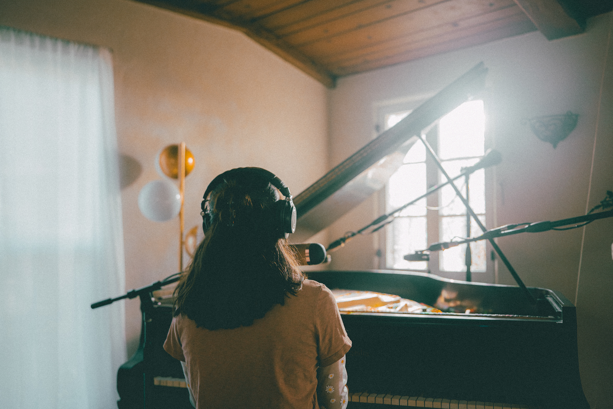

christina galisatus
piano accompaniment
I love the art of piano accompaniment! Currently getting to practice this at:
✿ Occidental College as a Music Department Accompanist (jazz + commercial music)
✿ Grand Arts High School in DTLA accompanying the choirs (classical + jazz)
✿ First Christian Church of Torrance accompanying the choir (classical)
✿ American Contemporary Ballet as a class pianist (classical)
✿ Occidental College as a Music Department Accompanist (jazz + commercial music)
✿ Grand Arts High School in DTLA accompanying the choirs (classical + jazz)
✿ First Christian Church of Torrance accompanying the choir (classical)
✿ American Contemporary Ballet as a class pianist (classical)

photo: Joey Wasilewski